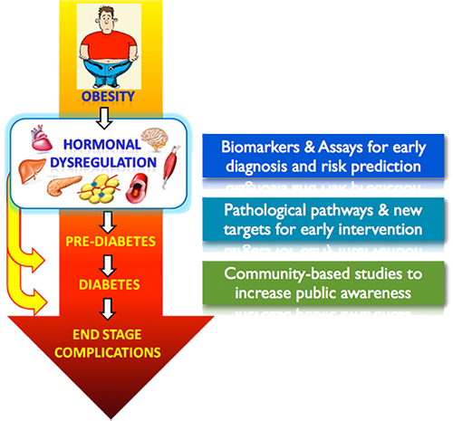

Introduction
|
Mission & Long-term Goals |
Missions & Long-term GoalsDespite intensive research over the past decades, there is no cure available for diabetes and its complications. Therefore, the long-term objective of our laboratory is to develop innovative and affordable strategies for prevention and curing these chronic diseases, through vigorous basic and translational research as well as diabetes education program in our local community. Our missions are:
 |
Copyright ©2018 State Key Laboratory of Pharmaceutical Biotechnology. All Rights Reserved.